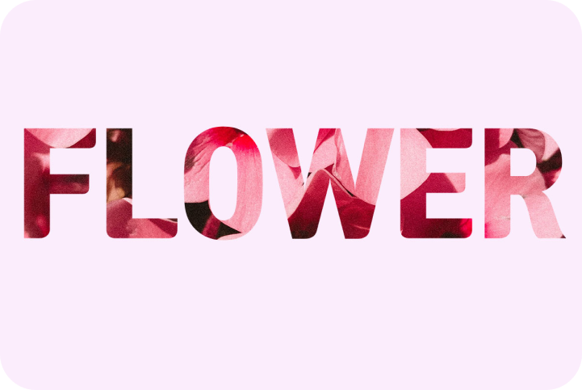
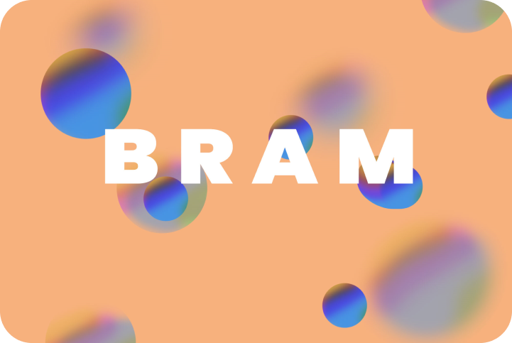
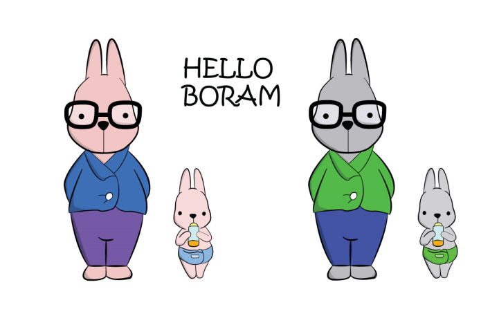
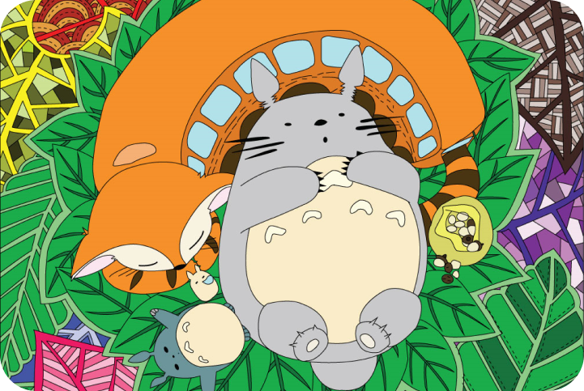

레이어 마스크
레이어의 일부분을 보이지 않도록 숨기는 기능입니다. 특정 모양의 선택 영역을 만들고 내부의 픽셀을 잘라낸 것과 같은 결과가 만들어집니다.
브러쉬 이펙트
Mixer Brush로 캔버스의 색상 혼합, 브러시의 색상 결합 등과 같은 페인팅 기법을 사용했습니다.
캐릭터 선 따고 칠하기
펜툴(P)을 이용하여 선을 따고 라이브 페인트를 이용하여 색칠했습니다.
스타일 캐릭터 그리기
펜툴과 폭툴(Shift-w)을 이용하여 선을 그리고 라이프 페인트 버킷 툴(K)을 이용하여 배색했습니다.